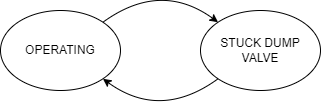

Continuous Separator¶
Model Filename: ContinuousSeparator.json
Separator with always open dump valve
States¶
- OPERATING
Separator operating normally
- STUCK_DUMP_VALVE
Separator has a stuck dump valve

Fluid Flows¶
- Vapor
Condensate flash released to sales
Secondary ID: condensate_gas_sales
- Vapor
Water flash released to sales
Secondary ID: water_gas_sales
- Vapor
Condensate flash released to downstream when dump valve is stuck. Usually this will be 0 but we need to establish a link to anticipate sdv
Secondary ID: condensate_flash
- Vapor
Water Flash released to downstream when dump valve is stuck. Usually this will be 0 but we need to establish a link to anticipate sdv
Secondary ID: water_flash
- Water
Primary Water flow to downstream equipment
Secondary ID: primary_water
- Water
Remaining water to downstream equipment
Secondary ID: secondary_water
- Condensate
Primary Condensate Flow
Secondary ID: condensate_flow
- Vapor
All the gas from upstream, goes to gas sales
Secondary ID: gas_sales
- Vapor
All the gas from upstream if dump valve is stuck, goes to downstream
Secondary ID: stuck_dump_valve
Site Definition Columns¶
- Facility ID
Facility of the equipment
- Unit ID
Identity of the equipment
- Component Count
Component counts of all the equipment that can leak
- Primary Water Takeoff Ratio
Specifies a fraction of total water that goes to the primary upstream equipment
- Flow GC Tag
Identifies the correct GC from the GC table.
- Stuck Dump Valve Component Count
2 phase or 3 phase separator. Not implemented yet.
- Stuck Dump Valve pLeak
Probability of the dump valve getting stuck
- Stuck Dump Valve Failure Duration Min
Specifies the minimum duration of the dump valve failure (Mean Time To Repair)
Units: days
- Stuck Dump Valve Failure Duration Max
Specifies the maximum duration of the dump valve failure (Mean Time To Repair)
Units: days
- Fraction of Flash Released
The fraction of all gas in the separator released to the next primary equipment. The remaining gas goes to the gas sales / pipeline. This is a distribution file that selects a random number from the histogram. These are guesses as of now. More data needed.
- Leak GC Name
Gas composition pointer for leaks based on pLeak, MTTR, MTBF
Emitters¶
- Separator Component Leak
Emitter Category: COMPONENT LEAK
Emission Category: FUGITIVE
Model Parameters:
- Component Leak Survey Frequency
Frequency of leak surveys (ex. LDAR)
Units: days
- Component Count
Component counts of all the equipment that can leak
- Component pLeak
Probability of leak of the number of components leaking at any time
- Factor Tag
A parameter to identify a set of activity and emission factors in Factors.csv file
- Leak GC Name
Gas composition pointer for leaks based on pLeak, MTTR, MTBF
- Separator Pneumatic Emissions
Emitter Category: PNEUMATIC EMISSION
Emission Category: VENTED
Model Parameters:
- Leak GC Name
Gas composition pointer for leaks based on pLeak, MTTR, MTBF
- Factor Tag
A parameter to identify a set of activity and emission factors in Factors.csv file
- Actuator Type
Actuator type of pneumatics on the facility
Units: Gas, Air, Electric
Continuous Separator Reference¶
The initial state always starts at OPERATING. This is to ensure we have the correct proportions of incoming fluid flows from wells or separators or fixed source. The incoming flows are either coming from continuous wells, cycling wells or a fixed source. Oil and water flows are used to generate flashes from the separator which constitutes the produced gas. The failure mode where the dump valve of a separator gets stuck is modeled in both the separator models. The user has to provide stuck dump valve duration (MTTR) and its pLeak. The code calculates the MTBF. The durations for MTTR and MTBF are used as the criteria for state change.
Fluid Flows when separator is Operating: Flows enter into separators are coming from wells (oil and water). Flows going to the next equipment are Water and Oil. Water flow is divided into two fractions to divert the primary water flow to one equipment and secondary water flow to another equipment. The flashed gas is released to pipeline for gas sales. We do not need to specify the released gas in Fluid Flows since it is assumed that all flashed goes to gas sales unless we want to be specific on where the gas goes (ex: compressors).
Fluid Flows when dump valve is stuck: Flows going to next equipment are water, oil, a random \(x\%\) gas flashed. This is to simulate that some fraction of this gas is going to the next stage / equipment when the dump valve gets stuck. Hence, the flows going to gas sales are \((1-x)\%\) of the gas flashed. This ensures the flows are conserved and no gas is lost or generated. We do not have data on the amount of gas released so the user can specify any distribution as required.
When we generate Flash from condensate and water, we multiply the liquid with the specific row in the Gas Composition file to convert the flashes from bbl to scf. Hence, all the gas going to next equipment and gas sales will always be in scf.
Validating Model Behavior¶
Like in wells, we note down the input data (pLeak, MTTR and MTBF) and run the simulation for a long time, multi-mc runs.
Calculate the average of each state time one mc at a time and/or all mcs together and observe if the states match the input columns. Average state time for Stuck Dump Valve state must be in the range of the MTTR values. We also calculate Operating state average time, this value is the MTBF. Once we have average MTTR and MTBF, we can calculate the average pLeak. Compare this value to the pLeak in the input sheet. The average pLeak from the outputs must tend towards pLeak in the input sheet as simtime and/or mcRuns tend to infinity.